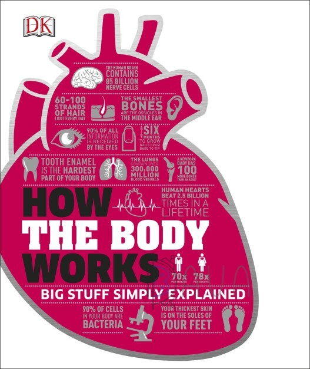
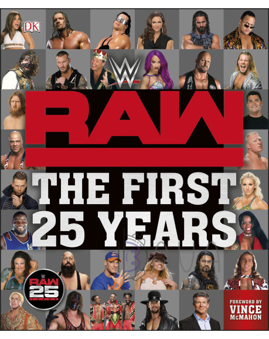

About us
Welcome to our website! Our site was created so that you do not waste time looking for books. On our site, we have collected the best sports books. Only the best, interesting and exciting books. Read with pleasure!
Books
-

How the Body Works
 4.9
4.9
How The Body Works is a fascinating exploration of the weird and wonderful processes that occur within the human body, often without us knowing. Understand how our bodies keep us alive and thriving and get to the bottom of such niggling questions as why we get dizzy, why we get butterflies in our stomachs, and why we get jetlag! How The Body Works is a bold and accessible visual guide to every aspect of how the human body and brain works, combining the science of human anatomy books with beautiful images. Enjoy this enlightening resource that covers everything from skin to bone and even the psychology of dreams and emotions.
More -

Yoga For Men
4.9
Maximise your athletic performance, reduce your post-workout aches, and help prevent injuries with yoga. Professional athletes are making yoga a regular part of their fitness routines; and GQ, HuffPost, and Men's Health have all advocated yoga for men. Flexibility is one of the most important, yet overlooked, elements of fitness, and sports success- for example tight hamstrings mean your stride isn't as long when running, or that you can't swing your leg as high when kicking a ball. Yoga increases flexibility, building a bigger range of motion and allowing you to work more muscle fibres with every movement. With straightforward language and easy-to-follow steps, Man Yoga will teach you how to execute the 50 key yoga postures you need for greater endurance, flexibility, balance, and strength - no chanting required. It also includes 20 yoga workouts tailored to help you meet specific performance goals, such as core strength or greater power. You'll find that incorporating yoga into your training will help you get stronger, play harder, and feel better.
More -
BMA Bad Back Book
4.9
Banish back pain and strengthen your back and neck with this clear and practical illustrated guide to a healthy back. Most people will experience back pain at some point in their lives. This can affect sleep as well as daily tasks and so impacts significantly on quality of life. BMA Bad Back Book tackles the problem step by step, from finding out what the problem is to treatment, exercises, pain relief, and maintenance. Whether youre looking for immediate back and neck treatment or ways to prevent injuries recurring, the illustrated step-by-step exercises show you what to do to. A practical guide, endorsed by the British Medical Association, this book also features invaluable advice on coping with neck and back pain and getting the best results from rehabilitation. Whether you are an active sports enthusiast or a sedentary office worker, BMA Bad Back Book will help you stay fit, healthy, and pain free.
More -
Eyewitness Companions: Scuba Diving
4.8
Diving offers challenge, excitement and the thrill of exploration but in turn requires skill, discipline and knowledge. With expert advice and step-by-step illustrations, "Eyewitness Companions: Scuba Diving" reveals how to perfect these skills. This essential companion is suitable for those curious to take the plunge, right up to qualified divers interested in expanding their knowledge. You'll discover: essential equipment - know your gear, from fins and masks to depth gauges and tanks; diving techniques - learn essential step-by-step techniques, from training in the pool to taking to the open seas; places to dive - explore the top dive sites of the world, from coral reefs in the Pacific to wrecks in the Red Sea; and, marine life - get the most from your dives with a comprehensive guide to underwater plant and animal life.
More -

A Little Course in Pilates
4.8
Simply everything you need to know to learn something new; a practical course in pilates Ever wanted to learn pilates but don't know where to begin? Take the first step with A Little Course in Pilates, part of a new series of learning guides from DK where nothing is assumed and everything is explained. Learn at your own pace, in your own time and in the comfort of your own home. Each course follows the same structure; start simple and learn the basics, build on what you've learnt and then show off your new skills! A Little Course in Pilates takes you from complete beginner to being able to master 70 pilates poses and 9 sequences. Start simple with basic poses including leg and spine stretches, build on them with the mini bridge and side kicks and take it further with climb like a tree and the swan. The step-by- step pictures show you what other courses only tell you and the practice moves keep you on the right track. A Little Course in Pilates will help you learn your new skill in no time. Collect the set - 10 'A Little Course in...' books available; Baking, Preserving, Pilates, Yoga, Wine Tasting, Growing Veg & Fruit, Sewing, Knitting, Crochet and Astronomy
More -

Strength Training
4.8
Strength training has been proven to have a beneficial effect on our body image and health, so it's not surprising that the number of people participating in this activity has been rising steadily over the last 20 years (in the US,for example, 21% of all adults now train with weights at least twice a week, with women making up one in five of those training). Strength Training is the essential guide to building and sculpting a better physique, whether your aim is to increase muscle bulk, tone up, or improve your strength and endurance. Written by experts from the British Weight Lifting Association (BWLA), it offers a simple, practical, and no-nonsense approach to the subject, with an emphasis on clear demonstration of optimum technique. Each exercise is illustrated with step-by-step artworks to ensure you perform the movements correctly and safely, and anatomical "X-ray" illustrations showing targeted muscle groups at a glance. Exercises are also accompanied by helpful features such as pitfalls to watch out for and adaptations to try as you progress. Featuring specially-commissioned programmes for a range of abilities and goals - each with beginner, intermediate, and advanced levels - Strength Training offers everything you need to achieve optimum results from your workouts. Written by strength training experts this is ideal for free and fixed weights, in the gym or at home. The ultimate guide to improving your muscle tone, strength and endurance.
More -

Go Ski
4.7
Read it, watch it, do it with this innovative book and 30-minute DVD for anyone itching to get up off the sofa and go! Clear step-by-step coaching and inspirational photography in the book will get you started or improve your skills. Then, master techniques with your own virtual coach – from the snowplough to parallel turns, the 30-minute DVD uses 360 degree live-action freeze-frame graphics and slow-motion sequences guaranteed to get you ready for the slopes in no time.
More -
Golf Skills
4.7
Practical pocket guides, for quick and easy reference any time, anywhere Golf Skills is a handy, pocket-sized instruction manual, covering the fundamentals of golf with step-by-step illustrations and clear, bite-sized tips. Offering everything you need to know to get started, along with a wealth of expert tricks and tips to improve skills and techniques, from warm-up exercises and training routines to setting up and teeing off. Progresses from the very basics for beginners, through all the elements essential to becoming adept at golf, to advanced techniques to keep you ahead of the game. Ideal for anyone looking to take up golf - this new series offers perfect, at-a-glance reference to keep with you at all times.
More -
The Football Book
4.7
This is the ultimate guide for any football fan who wants to know everything about the beautiful game - from World Cup winners to football skills and techniques. Whether you are a keen player, a lifelong supporter, or an armchair football manager, this book illustrates every aspect of the most popular sport in the world. Published in time for the UEFA Euro 2020, The Football Book reveals the story behind the game - from the history of the sport to the results of tournaments in the 2018-19 season. Eye-catching step-by-step artworks and jargon-free text profile the roles of players, equipment, team formations, strategies, and individual skills, while maps, quotes, and statistics give you all of the key facts on national teams, famous club sides, and iconic players, as well as the greatest competitions around the world.
More -

WWE RAW The First 25 Years
4.7
This action-packed anniversary edition covers 25 years of WWE's flagship entertainment event - RAW. Amazing photography and fascinating text document all the highlights of the show. Relive the show-stopping moment when WWE RAW invades WCW's Monday Nitro. Experience Stone Cold Steve Austin's incredible beer truck stunt. Read about the celebrated formations and reunions of D-Generation X; Chris Jericho's shocking debut; and the emotional retirements of stars such as Ric Flair, Shawn Michaels, and Edge. From the very first show in January 1993 through to January 2018, all the memorable moments, key matches, and shocking plot twists of RAW are faithfully recorded in WWE RAW The First 25 Years. Engaging text and incredible photography from WWE's archives including action shots, Superstar portraits, posters, and other memorabilia take the reader on a trip through RAW's history. This comprehensive guide is a must-buy for RAW fans old and new.
More